Interpretting effects of continuous covariates
As with group effects, the interpretation of a single, continuous predictor is pretty straightforward. Here, all we are doing is looking to use the equation for a line we have fit (y = b + mx) to predict the effects of one continuous variable on another. Let’s use the ‘swiss’ data again for this. Remember that this dataset compares fertility rates to a number of socio-economic indicators:
data('swiss')
names(swiss)
## [1] "Fertility" "Agriculture" "Examination"
## [4] "Education" "Catholic" "Infant.Mortality"
We’ll make a model to predict the effect of education level on fertility:
# Make the model and save it to a named object called 'swiss.mod'
swiss.mod = lm(Fertility~Education, data = swiss)
Next, we can look at the coefficient estimates for swiss.mod:
# Summarize the model
summary(swiss.mod)
##
## Call:
## lm(formula = Fertility ~ Education, data = swiss)
##
## Residuals:
## Min 1Q Median 3Q Max
## -17.036 -6.711 -1.011 9.526 19.689
##
## Coefficients:
## Estimate Std. Error t value Pr(>|t|)
## (Intercept) 79.6101 2.1041 37.836 < 2e-16 ***
## Education -0.8624 0.1448 -5.954 3.66e-07 ***
## ---
## Signif. codes: 0 '***' 0.001 '**' 0.01 '*' 0.05 '.' 0.1 ' ' 1
##
## Residual standard error: 9.446 on 45 degrees of freedom
## Multiple R-squared: 0.4406, Adjusted R-squared: 0.4282
## F-statistic: 35.45 on 1 and 45 DF, p-value: 3.659e-07
From this summary, we can see that we have an intercept of…
# Save intercept to a named object
intcpt = 79.6101
…and a ‘slope’ for Education of…
# Save slope to a named object
slp = -0.8624
As with the case of categorical explanatory variables, we are now interested in understanding how the response changes with respect to the variable of interest. But, this time we want to see what the mean (or some other measure) of the response is for all possible values of the explanatory variable from the lowest value to the maximum value, rather than just a few discrete values that we observed. To do this, we first need to formalize our equation. Let’s make a function that will predict the mean fertility for any given value of education level based on our model:
y_fert = function(x){
intcpt + slp * x
}
Now, we can apply that function to either our observed data, or to newly generated data to make some predictions!
# Using our observed data:
# Calculate new y values using the model parameters and our new data
obs_fit = y_fert(swiss$Education)
# Plot the results
plot(swiss$Education, obs_fit, type='l', xlab='Education level',
ylab='Fertility index')
# Using new data based on the range of our explanatory variable:
# Make a sequence of new values based on the range of our data
newEd = data.frame(seq(from=min(swiss$Education), to=max(swiss$Education),
by=0.01))
# Give the only column a name that matches the data in the model above
names(newEd) = 'Education'
# Predict changes in fertility based on education using our new values for
# education level, 'newEd', and our model parameters
pred_fit = y_fert(newEd$Education)
# Plot the changes
par(new=TRUE) # This tells R to add it to the same graph
plot(swiss$Education, obs_fit, type='l', col='red', xlab='', ylab='')
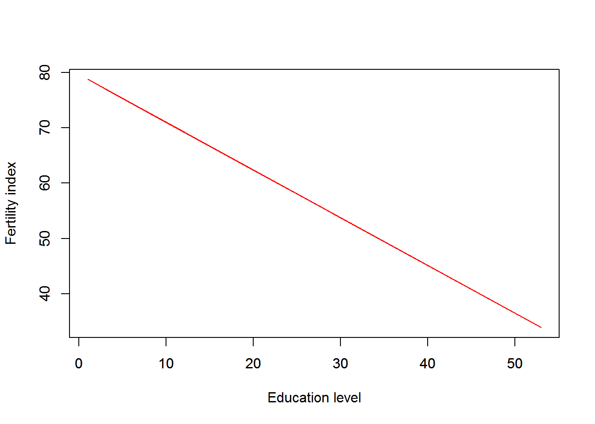
As you can see, the plotted lines completely overlap, which is exactly what we would expect.
This is really useful for showing the effects of a continuous explanatory variable on the response, but there are a couple of issues:
1. We are showing the model predictions without any data, which can be use- ful sometimes in very complex datasets but not for simple linear models.
2. We are only showing the mean predictions. It would be nice to incorporate some of the uncertainty in our model, too.
How can we fix these things? Glad you asked! First of all, we can actually plot the raw data against our predictions…
# Make the plot
plot(swiss$Education, swiss$Fertility, ylab='Fertility index',
xlab='Education level', pch=21, bg='gray', cex=1.5, ylim=c(0, 100),
cex.lab=1.5, cex.axis=1.25, yaxt='n')
axis(side = 2, las = 2)
# That's better. Now, we can plot our predictions over the top of that
lines(swiss$Education, obs_fit, col='blue', lwd=2)
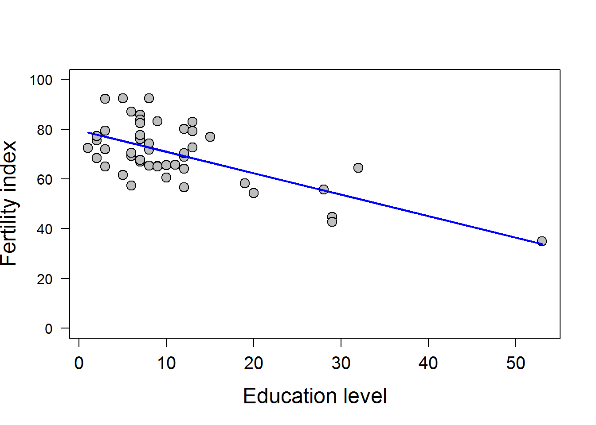
What about the uncertainty in our model and our data? We can add this in by using the handy-dandy predict function in R!
To get info on how to do this for linear models, scroll down and click on the link to predict.lm. You will see that we need to supply some kind offitted model object, some data from which to make predictions, and the type of interval you would like to show.
object: in this case it is our 'swiss.mod'
newdata: This needs to be a data frame. It can either be the original,
or it can be a new dataframe, but it must contain columns with
the same names as the explanatory variables used in the model.
interval: usually, we are interested in the prediction interval, as this
tends to be more honest about the uncertainty in our model
predictions and our data, but there are other options
pred_int = predict(object=swiss.mod, newdata=newEd, interval='prediction')
So, what does the predict function give us?
## fit lwr upr
## 1 78.74771 59.30196 98.19346
## 2 78.73908 59.29377 98.18440
## 3 78.73046 59.28559 98.17534
## 4 78.72184 59.27740 98.16628
## 5 78.71321 59.26921 98.15722
## 6 78.70459 59.26102 98.14816
As you can see, this is a matrix with three columns named fit, lwr, and upr. The column fit is the mean prediction from our model for the new data. The columns lwr and upr are the lower and upper limits for our prediction intervals. We already have our mean line fit, so we’ll just throw in some lines for the lower and upper bounds to our predictions! To do this, we can’t use our dollar-sign notation for pred_int because it is a matrix, so we can either do pred_int[ , i] or pred_int[ , 'colname i'].
# Make the original plot
plot(swiss$Education, swiss$Fertility, ylab='Fertility index',
xlab='Education level', pch=21, bg='gray', cex=1.5, ylim=c(0, 100),
cex.lab=1.5, cex.axis=1.25, yaxt='n')
axis(side = 2, las = 2)
# Add line for mean predictions over the top of that
lines(swiss$Education, obs_fit, col='blue', lwd=2)
# Add prediction intervals
lines(x=newEd$Education, y=pred_int[ ,2], col='red', lty=2, lwd=2)
lines(x=newEd$Education, y=pred_int[ ,3], col='red', lty=2, lwd=2)
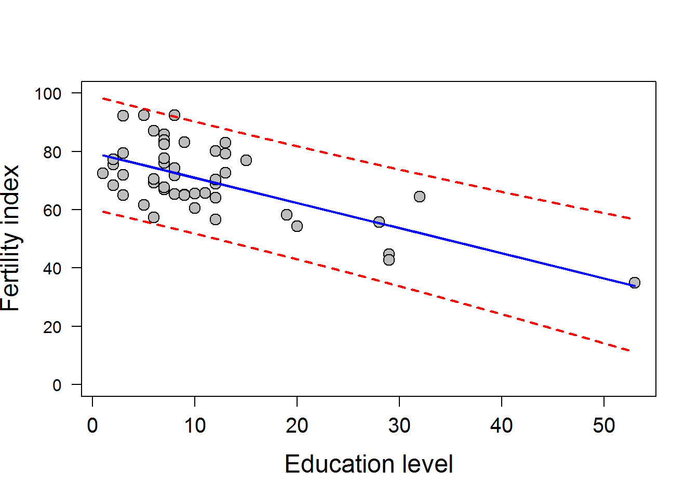
Now that is a money, high-quality figure that shows your raw data, the model predictions, and the uncertainty associated with both of these.
Main effects in ANCOVA
Now, we are going to step up the complexity a little bit and start to look at how to interpret linear models with more than one variable, and more than one variable type. Exciting, I know!
One categorical and one continuous explanatory variable- last week:
# Read in a new data set
# This data set contains pulses of 2 species of crickets collected under
# varying temperatures
crickets = read.csv('http://employees.oneonta.edu/stichds/data/crickets.txt')
Here we want to investigate the effects of species and temperature on pulses of individual crickets.
# Fit the model
cricket.mod = lm(Pulse~Species + Temp, data=crickets)
# Install the car package. We need a function from this library for summary.
# install.packages('car') # Uncomment front of line to install
library(car)
# Now we create the anova table for our ancova model
Anova(cricket.mod)
## Anova Table (Type II tests)
##
## Response: Pulse
## Sum Sq Df F value Pr(>F)
## Species 598.0 1 187.4 6.272e-14 ***
## Temp 4376.1 1 1371.4 < 2.2e-16 ***
## Residuals 89.3 28
## ---
## Signif. codes: 0 '***' 0.001 '**' 0.01 '*' 0.05 '.' 0.1 ' ' 1
# And we can look at the summary of the linear model
summary(cricket.mod)
##
## Call:
## lm(formula = Pulse ~ Species + Temp, data = crickets)
##
## Residuals:
## Min 1Q Median 3Q Max
## -3.0128 -1.1296 -0.3912 0.9650 3.7800
##
## Coefficients:
## Estimate Std. Error t value Pr(>|t|)
## (Intercept) -7.21091 2.55094 -2.827 0.00858 **
## Speciesniv -10.06529 0.73526 -13.689 6.27e-14 ***
## Temp 3.60275 0.09729 37.032 < 2e-16 ***
## ---
## Signif. codes: 0 '***' 0.001 '**' 0.01 '*' 0.05 '.' 0.1 ' ' 1
##
## Residual standard error: 1.786 on 28 degrees of freedom
## Multiple R-squared: 0.9896, Adjusted R-squared: 0.9888
## F-statistic: 1331 on 2 and 28 DF, p-value: < 2.2e-16
We see that there are significant effects of species and temperature on the pulse of individual crickets. Everything else proceeds as above! We can build in complexity as needed, and we can make predictions as above.
Plot the predictions by species.
# Plot the raw data
plot(crickets$Temp,
crickets$Pulse,
pch=21,
bg=c('gray', 'black')[crickets$Species],
cex=1.5,
ylab = 'Pulse',
xlab = 'Temperature (C)',
yaxt = 'n')
# Add the y-axis labels and rotate them
axis(side=2, las=2)
# Make predictions from the fitted model object
preds = (predict.lm(cricket.mod, newdata = crickets,
interval = 'prediction'))
# Plot the predictions
# Add prediction lines for species 'ex'
# Mean
lines(crickets$Temp[crickets$Species=='ex'],
preds[,1][crickets$Species=='ex'], col='gray', lty=1)
# Lower
lines(crickets$Temp[crickets$Species=='ex'],
preds[,2][crickets$Species=='ex'], col='gray', lty=2)
# Upper
lines(crickets$Temp[crickets$Species=='ex'],
preds[,3][crickets$Species=='ex'], col='gray', lty=2)
# Add prediction lines for species 'niv'
# Mean
lines(crickets$Temp[crickets$Species=='niv'],
preds[,1][crickets$Species=='niv'], col='black', lty=1)
# Lower
lines(crickets$Temp[crickets$Species=='niv'],
preds[,2][crickets$Species=='niv'], col='black', lty=2)
# Upper
lines(crickets$Temp[crickets$Species=='niv'],
preds[,3][crickets$Species=='niv'], col='black', lty=2)
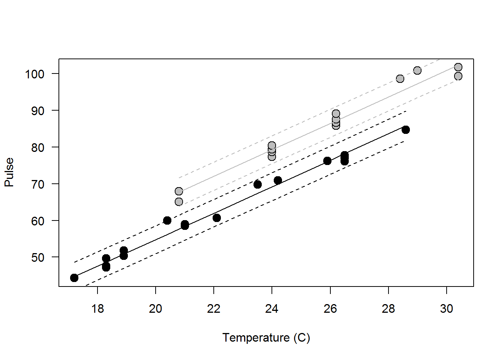
Main effects with two categorical explanatory variables
For this example, we will consider a new data set. These data are from an experiment in Restorative Dentistry and Endodontics that was published in 2014. The study examines effects of drying light and resin type on the strength of a bonding resin for teeth.
The full citation for the paper is:
Kim, H-Y. 2014. Statistical notes for clinical researchers: Two-way analysis of variance (ANOVA)-exploring possible interaction between factors. Restorative Dentistry and Endodontics 39(2):143-147.
Here are the data:
dental = read.csv('http://employees.oneonta.edu/stichds/data/dental.csv')
Now, fit a model to the data.
# We are looking only at main effects
dental.mod = lm(mpa~lights + resin, data=dental)
If we make an ANOVA table for this two-way ANOVA, we see that there are significant main effects of resin type but not lights used for drying.
## Analysis of Variance Table
##
## Response: mpa
## Df Sum Sq Mean Sq F value Pr(>F)
## lights 1 34.7 34.72 0.6797 0.4123
## resin 3 1999.7 666.57 13.0514 6.036e-07 ***
## Residuals 75 3830.5 51.07
## ---
## Signif. codes: 0 '***' 0.001 '**' 0.01 '*' 0.05 '.' 0.1 ' ' 1
We can also examine the model coeffficients for a closer look at what this means.
##
## Call:
## lm(formula = mpa ~ lights + resin, data = dental)
##
## Residuals:
## Min 1Q Median 3Q Max
## -14.1162 -4.9531 0.1188 4.4613 14.4663
##
## Coefficients:
## Estimate Std. Error t value Pr(>|t|)
## (Intercept) 19.074 1.787 10.676 < 2e-16 ***
## lightsLED -1.318 1.598 -0.824 0.41229
## resinB 3.815 2.260 1.688 0.09555 .
## resinC 6.740 2.260 2.982 0.00386 **
## resinD 13.660 2.260 6.044 5.39e-08 ***
## ---
## Signif. codes: 0 '***' 0.001 '**' 0.01 '*' 0.05 '.' 0.1 ' ' 1
##
## Residual standard error: 7.147 on 75 degrees of freedom
## Multiple R-squared: 0.3469, Adjusted R-squared: 0.312
## F-statistic: 9.958 on 4 and 75 DF, p-value: 1.616e-06
Remember, in our data we had 2 kinds of lights, and 4 kinds of resin. But, here we have one less of each! Why is this? It is because of the way categorical variables are dummy coded for linear models, so one level of each variable is wrapped up in the estimate for our intercept.
Right now, you might be a little confused about how to calculate and show the effect size for these variables. If not, you should probably take a more advanced stats class.
One reasonable option might be to summarize the data by the means and plot the means.
# Summarize the means
library(plyr)
mus = ddply(dental, c('lights', 'resin'), summarize, mean=mean(mpa))
# Plot the summaries
# Set graphical parameters
par(mfrow=c(1,2), mar=c(5,5,1,1))
# Make resin into a numeric for plotting trick
resin= as.numeric(dental$resin)
# Plot the raw data by resin type and color code for lights on the second
# linen of code ( bg=c('blue', 'red')[c(dental$lights)] )
plot(x=resin, y=dental$mpa, type='p',
pch=21, bg=c('blue', 'red')[c(dental$lights)],
ylim=c(0,50), ylab='', xlab='', yaxt='n', xaxt='n')
par(new=TRUE)
# Plot the means for Halogen lights by resin type
plot(mus$mean[mus$lights=='Halogen'], pch=21, bg='blue',
ylim=c(0,50), ylab='', xlab='', yaxt='n', xaxt='n', cex=1.75)
# Add a line for Halogen lights by resin type
lines(mus$mean[mus$lights=='Halogen'], type='l', col='blue')
# Add the plot for LED lights
par(new=TRUE)
# Plot the means for LED by resin type
plot(mus$mean[mus$lights=='LED'], pch=21, bg='red',
ylim=c(0,50), ylab='', xlab='', yaxt='n', xaxt='n', cex=1.75)
# Add a line for LED lights by resin type
lines(mus$mean[mus$lights=='LED'], type='l', col='red')
# Add x and y axes
axis(side = 1, at=c(1,2,3,4), labels=c('A','B','C','D'))
axis(side = 2, las=2)
# Add labels
mtext('Resin type', side=1, line=3, cex=1.25)
mtext('Bond strength (mpa)', side=2, line=3, cex=1.25)
# Let us have a legend
legend(x=1, y=50, legend = c('Halogen', 'LED'), lty=1,
col=c('blue', 'red'), bty='n')
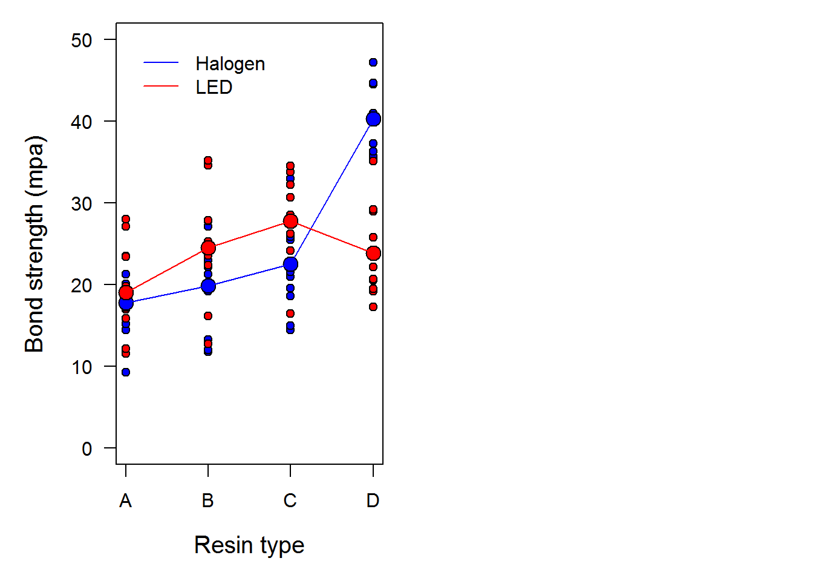
Another option is to make predictions for each combination of levels. We can do this using the math behind our model.
# Store the coefficients in their own object
res = data.frame( summary(dental.mod)$coefficients )
res
## Estimate Std..Error t.value Pr...t..
## (Intercept) 19.07375 1.786635 10.6757944 1.044637e-16
## lightsLED -1.31750 1.598015 -0.8244603 4.122925e-01
## resinB 3.81500 2.259935 1.6881019 9.554608e-02
## resinC 6.74000 2.259935 2.9823872 3.856472e-03
## resinD 13.66000 2.259935 6.0444226 5.386106e-08
Make predictions for Halogen lights. Remember that the intercept term is the coefficient for Halogen lights and resin A. All other coefficients are interpreted in relation to this one, so we base our calculations for each level on this term.
hal = c(
res[1,1], # Halogen lights, resin A
res[1,1] + res[3,1], # Halogen lights, resin B
res[1,1] + res[4,1], # Halogen lights, resin C
res[1,1] + res[5,1] # Halogen lights, resin D
)
Make predictions for LEDvlights. Remember that the intercept term is the coefficient for Halogen lights and resin A. All other coefficients are interpreted in relation to this one, so we base our calculations for each level on this term. Sound familiar?? Now, to predict effects of LED lights and each resin type we need to include the coefficient for lightsLED.
led = c(
res[1,1] + res[2,1], # LED lights, resin A
res[1,1] + res[2,1] + res[3,1], # LED lights, resin B
res[1,1] + res[2,1] + res[4,1], # LED lights, resin C
res[1,1] + res[2,1] + res[5,1] # LED lights, resin D
)
How do these values compare to our empirical means? Let’s see…
# Plot the summaries
# Set graphical parameters
par(mfrow=c(1,1), mar=c(5,5,1,1))
# Plot the raw data by resin type and color code for lights
plot(x=resin, y=dental$mpa, type='p',
pch=21, bg=c('blue', 'red')[c(dental$lights)],
ylim=c(0,50), ylab='', xlab='', yaxt='n', xaxt='n')
par(new=TRUE)
# Plot the means for Halogen lights by resin type
plot(hal, pch=21, bg='blue', cex = 1.75,
ylim=c(0,50), ylab='', xlab='', yaxt='n', xaxt='n')
# Add a line for Halogen lights by resin type
lines(hal, type='l', col='blue')
# Add the plot for LED lights
par(new=TRUE)
# Plot the means for LED by resin type
plot(led, pch=21, bg='red', cex=1.75,
ylim=c(0,50), ylab='', xlab='', yaxt='n', xaxt='n')
# Add a line for LED lights by resin type
lines(led, type='l', col='red')
# Add x and y axes
axis(side = 1, at=c(1,2,3,4), labels=c('A','B','C','D'))
axis(side = 2, las=2)
# Add labels
mtext('Resin type', side=1, line=3, cex=1.25)
#mtext('Bond strength (mpa)', side=2, line=3, cex=1.25)
# Let us have a legend
legend(x=1, y=50, legend = c('Halogen', 'LED'), lty=1,
col=c('blue', 'red'), bty='n')
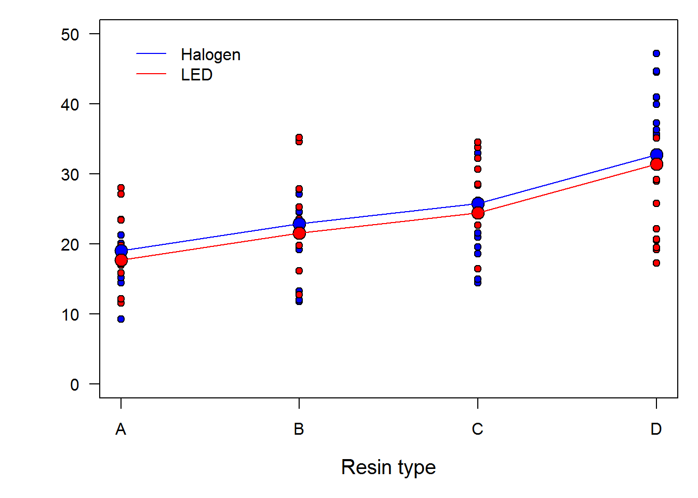
Well now, that is definitely different. We can clearly see now that there is no real effect of lights on the response, and that in our model we assumed that the relationship between resin and bond strength is the same across light types. So what do the differences between our empirical data and our predictions mean?
All models are wrong and some are useful.
Clearly this specific model is not very useful. The reason for that is that in this model we have specified that the intercept of the line can change with light type, but not the slopes. We will examine a more useful model below.
LESSON: This is why we should always check the trends in our model predictions against the raw data. These should be presented together wherever possible (becomes more difficult in complex models).
Finally, we can use the built-in R functions to make predictions from our model:
# Get all combinations of the unique values for light and resin types
# using the 'expand.grid' function
dnew = data.frame(
expand.grid(unique(dental$lights), unique(dental$resin))
)
# Give the new df names
names(dnew) = c('lights', 'resin')
# Sort the dataframe by lights for ease
dnew = dnew[with(dnew, order(lights)), ]
Make predictions from these data. Because we are interested in comparing the different levels here, we can look at 95% CIs instead of prediction intervals.
dpreds = predict(
object = dental.mod, newdata = dnew, interval = 'confidence'
)
# Now plot the predictions from this model
# Set graphical parameters
par(mfrow=c(1,1), mar=c(5,5,1,1))
# Plot the raw data by resin type and color code for lights
plot(x=resin, y=dental$mpa, type='p',
pch=21, bg=c('blue', 'red')[c(dental$lights)],
ylim=c(0,50), ylab='', xlab='', yaxt='n', xaxt='n')
# Add lines for the mean and prediction intervals for halogen
lines(dpreds[1:4,1], col='blue', lty=1)
lines(dpreds[1:4,2], col='blue', lty=2)
lines(dpreds[1:4,3], col='blue', lty=2)
# Add lines for the mean and prediction intervals for LED
lines(dpreds[5:8,1], col='red', lty=1)
lines(dpreds[5:8,2], col='red', lty=2)
lines(dpreds[5:8,3], col='red', lty=2)
# Add x and y axes
axis(side = 1, at=c(1,2,3,4), labels=c('A','B','C','D'))
axis(side = 2, las=2)
# Add labels
mtext('Resin type', side=1, line=3, cex=1.25)
#mtext('Bond strength (mpa)', side=2, line=3, cex=1.25)
# Let us have a legend
legend(x=1, y=50, legend = c('Halogen', 'LED'), lty=1,
col=c('blue', 'red'), bty='n')
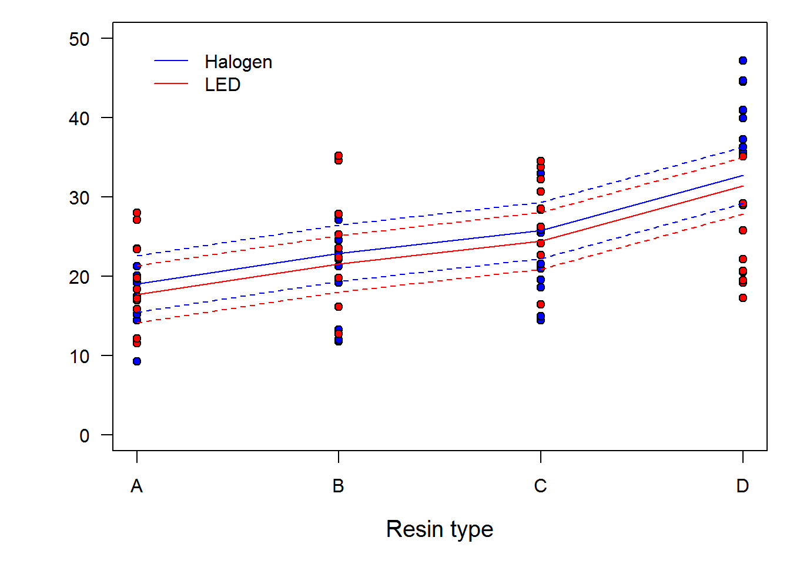
Two things to note here:
1. There is huge overlap in the CIs for these relationships, which makes us comfortable in the fact that we found no evidence for an effect of lights
2. These predictions are pretty messed up compared to the patterns we saw in the raw data…more to follow
Main effects with two continuous covariates
Let’s use the swiss data for this one. We start by fitting a model.
smod = lm(Fertility~Education*Catholic, data=swiss)
Now look at the results.
##
## Call:
## lm(formula = Fertility ~ Education * Catholic, data = swiss)
##
## Residuals:
## Min 1Q Median 3Q Max
## -11.953 -6.319 -1.368 6.380 14.297
##
## Coefficients:
## Estimate Std. Error t value Pr(>|t|)
## (Intercept) 70.937553 3.106471 22.835 < 2e-16 ***
## Education -0.427637 0.260176 -1.644 0.10754
## Catholic 0.184003 0.054539 3.374 0.00158 **
## Education:Catholic -0.009380 0.005904 -1.589 0.11942
## ---
## Signif. codes: 0 '***' 0.001 '**' 0.01 '*' 0.05 '.' 0.1 ' ' 1
##
## Residual standard error: 8.191 on 43 degrees of freedom
## Multiple R-squared: 0.5981, Adjusted R-squared: 0.5701
## F-statistic: 21.33 on 3 and 43 DF, p-value: 1.286e-08
Make the coefficients into a dataframe.
sres = data.frame(summary(smod)$coefficients)
The thing that’s confusing about multiple continous predictors is how to simulate new data used in predictions if there is any colinearity between the explanatory variables.
So, we can do one of two things.
1. We can make predictions one variable at a time and hold the others constant at their means.
2. We can make predictions based on our original data
First, let’s consider the case of making predictions from a single continuous explanatory variable (‘covariate’) at a time.
Start with Education since we’ve already done it.
# Make new values of Education across the range of observed values
ednew = seq(from=min(swiss$Education), to=max(swiss$Education), by=0.01)
# Make a column of mean for level of Catholocism
cathnew = rep(mean(swiss$Catholic), length(ednew))
# Combine them into a dataframe for use in predict function and assign names
new = data.frame(ednew, cathnew)
names(new) = c('Education', 'Catholic')
# Use the predict function to predict new values of fertility based on
# education holding catholic constant at the mean value
edpred = predict(smod, new, interval='prediction')
# Plot the raw data
par(mfrow=c(1,1))
plot(swiss$Education, swiss$Fertility, ylab='Fertility index',
xlab='Education level', pch=21, bg='gray', cex=1.5, ylim=c(0, 100),
cex.lab=1.5, cex.axis=1.25, yaxt='n')
axis(side = 2, las = 2)
# Now plot the mean prediction line
lines(new$Education, edpred[,1], col='blue', lwd=2)
lines(new$Education, edpred[,2], col='red', lwd=2, lty=2)
lines(new$Education, edpred[,3], col='red', lwd=2, lty=2)
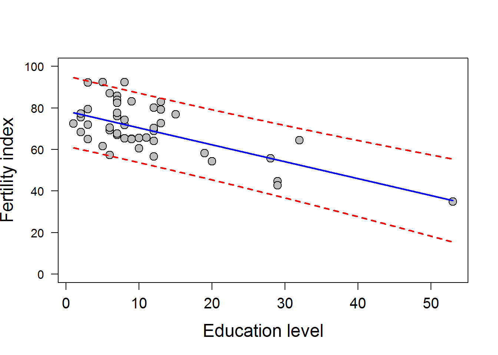
This should look familiar…
Second, we can do the same for Catholic holding Education constant at the mean observed value.
# Make new values of Education across the range of observed values
cathnew = seq(from=min(swiss$Catholic), to=max(swiss$Catholic), by=0.01)
# Make new column repeating the mean of Education across observations
ednew = rep(mean(swiss$Education), length(cathnew))
# Combine them into a dataframe for use in predict function and assign names
new = data.frame(ednew, cathnew)
names(new) = c('Education', 'Catholic')
# Use the predict function to predict new values of fertility based on
# education holding catholic constant at the mean value
cathpred = predict(smod, new, interval='prediction')
# Plot the raw data
plot(swiss$Catholic, swiss$Fertility, ylab='',
xlab='Percent Catholic', pch=21, bg='gray', cex=1.5, ylim=c(0, 100),
cex.lab=1.5, cex.axis=1.25, yaxt='n')
axis(side = 2, las = 2)
# Now plot the mean prediction line
lines(new$Catholic, cathpred[,1], col='blue', lwd=2)
lines(new$Catholic, cathpred[,2], col='red', lwd=2, lty=2)
lines(new$Catholic, cathpred[,3], col='red', lwd=2, lty=2)
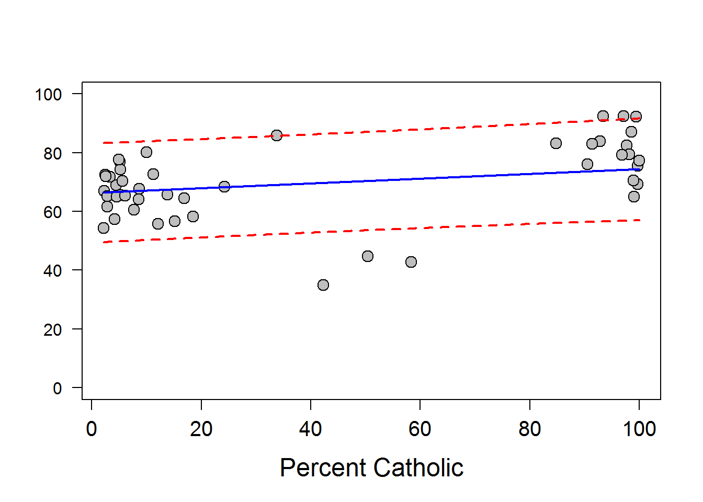
This looks a little different.
Here are some tricks we can use to visualize effects of 2 continuous variables at the same time.
# Predictions from original data
swpred = predict(object = smod, newdata = swiss, interval = 'prediction')
# Load the akima library after installling
#install.packages('akima')
library(akima)
# Make a dataframe out of the explanatory variables and predictions
persp.test <- data.frame(x=swiss$Education, y=swiss$Catholic, z=swpred[,1])
# Order the dataframe so we have increasing values of x and y
persp.test=persp.test[with(persp.test, order(x, y)), ]
# Do an interpolation to get predictions over a grid of x and y values using
# the 'interp' function out of the akima package
im <- with(persp.test, interp(x, y, z, duplicate='mean', extrap=FALSE))
Now we can use the default graphics to make some pretty fancy plots once we have interpolated our predictions across a grid of observed explanatory variables.
# A two-dimensional, colored contour plot with the filled.contour fxn:
filled.contour(im$x, im$y, im$z, col = rev(terrain.colors(25)))
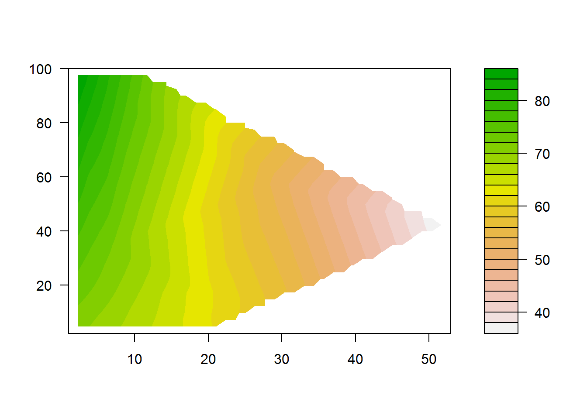
# How about a 3D contour plot? Sweet mother of swiss, these things are freakin
# awesome
# Make the data into a usable form
Education = im$x
Catholic = im$y
Fertility = im$z
nrz <- nrow(Fertility)
ncz <- ncol(Fertility)
# Create a function interpolating colors in the range of specified colors
jet.colors <- colorRampPalette( c("blue", "green") )
# Generate the desired number of colors from this palette
nbcol <- 100
color <- jet.colors(nbcol)
# Compute the z-value at the facet centres
zfacet <- Fertility[-1, -1] + Fertility[-1, -ncz] +
Fertility[-nrz, -1] + Fertility[-nrz, -ncz]
# Recode facet z-values into color indices
facetcol <- cut(zfacet, nbcol)
# Now make a sweet freakin' graph
par(mar=c(1.5,1,0,1), mfrow=c(1,1))
persp(Education, Catholic, Fertility,
col = color[facetcol],
phi = 40,
theta = 120,
scale=TRUE,
box=TRUE,
ticktype='detailed',
border=NULL,
r=10,
xlab='\n\nEducation',
ylab='\n\nCatholic',
zlab='\n\nFertility'
)
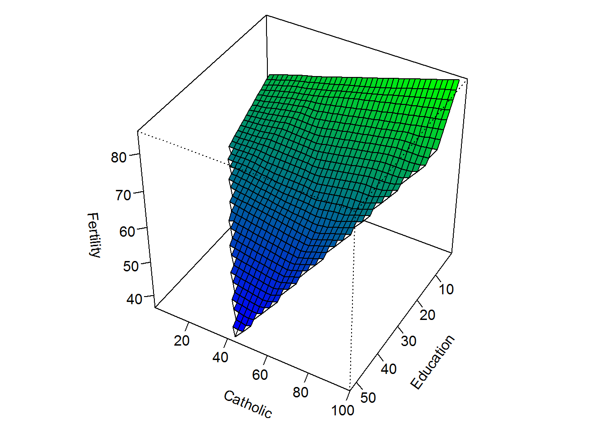